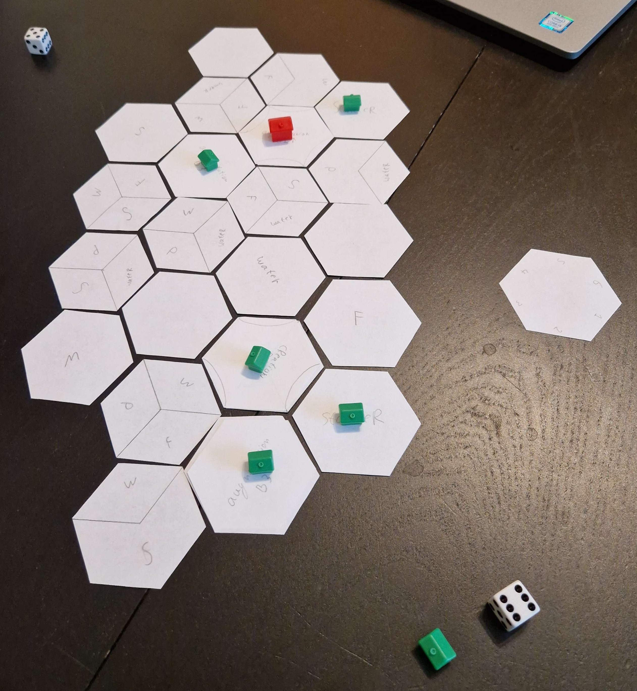
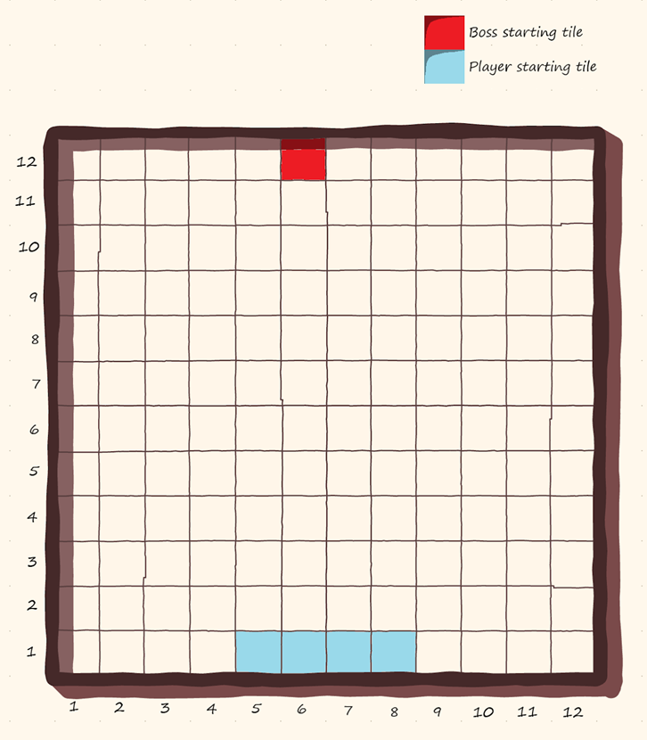
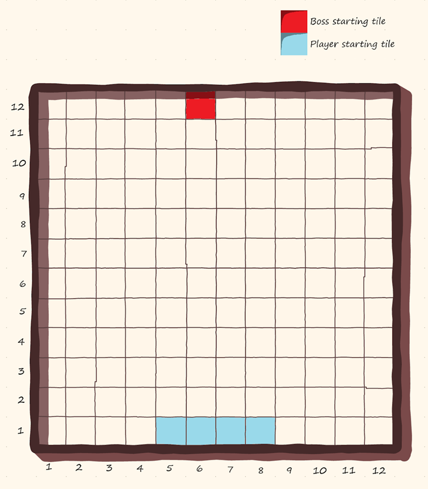
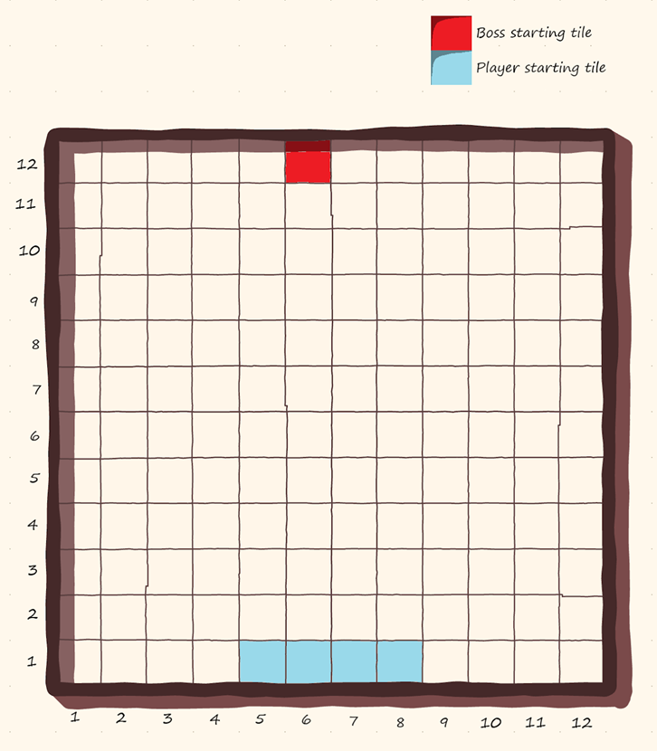

I am a versatile software science and currently a game design master student. I love to be creative and create software or products that can be enjoyed by the user both through structure and form.
I have a high attention to detail and
I have a bachelor in computing science specialising in Software Science and Security and having done an Artificial Intelligence minor. Currently I am following the Game and Media Technology master at the Utrecht University.
I have done projects and have experience in the following languages: C#, c++, Java, Haskell, GDScript, Python, SQL, javascript, javascript
Currently working on:
Positional deckbuilder in the Godot game engine
Physical serious boardgame to teach new students to plan and work together in a shared student housing environment
Link to
HEXED
Physical 2-6 player boardgame having the setting of witches and mages competing to become the single ruler of the world. In this world 3 types of magic exits:
Creation, augmentation and Destruction
Players need to explore hexagons and gather resources in a hexagonal world by building structures or using the types of magic to
gain the most victory points. The positioning and rotation of structures is vital for success and can also be sabotaged by others. Each player gets personalised missions that shape the strategy but, beware of the monsters that
lurk in the forests and move around with each round.
Every magic type has a different playstyle
Augmentation is about rotation of hexagons and buildings to get the most out of the synergy of buildings.
Destruction is about exploration and sabotage by completely destroying hexagons
Creation is about gathering of resources and making other buildings stronger

Paper prototype of HEXED
Rhythm Quest
A singleplayer roguelike deckbuilder game made in Unity using Fmod aimed at learning the exam material presented in the course Sound
and Music Technology at Utrecht University. The cards in this game represent sounds with a description and enemies present questions or riddles the player needs to answer using a card.
Rhythm quest main menuRhythm quest encounter
Undercooked
A 3D 2 player cooperative game (with controller support) made in Unity with the goal of making the most pizzas under a certain time limit given an endless stream of orders.
Made to analyse and model player behaviour and difficulty of maps in the game. This with the goal of analysing and approximating difficulty of new maps before playtesting.
Made for the course AI for Game technology, Utrecht university.
P's Paradox
An animation made in Blender in 10 weeks using own created mocap data using the motion capture lab at Utrecht University. It follows the life of an innocent soul being the i of the other villagers,
however his life truly changes when a mysterious meteor appears.
Won first place of all projects in the course Computer Animation at Utrecht University.
Untitled boardgame
A very simple 4 player bossbattle boardgame made for a user experiment to test augmented reality dice compared to normal and digital dice in a boardgame setting. Made to use
only a pencil, the sheet of the board and anything to indicate the players and boss. The boss (played by the players) will turn more and more tiles on the board into either slowed (halving movement of players) or disabled tiles (can't be walked on anymore).

Race cars
2 Physcial build cars with ramps in the front that can be controlled via a website on mobile phones. Sensors in the cars allow for a variety of
gamemodes. Capture the flag using sensors detecting colors on the ground and sensors detecting being flipped etc.
A Java program using JavaFX, that can be used as an interactive play board for role playing games. The user can add their own sprites and move them around the board in a grid pattern.
Made during the pandemic to be used for the role playing game Dungeons and Dragons.
Language learner
A minimalistic program created in the Godot game engine. It helps with training and memorising words and their meanings, most suitable for learning new languages.
The program offers a versatile experience that the user can edit and do on their own time.
Optimal planet website
Made the front-end of a Django based website for the optimal planet company. I was in charge of creating the interactive layout for the website and represent the users of the site and the tasks they completed with all of their scores.


 
